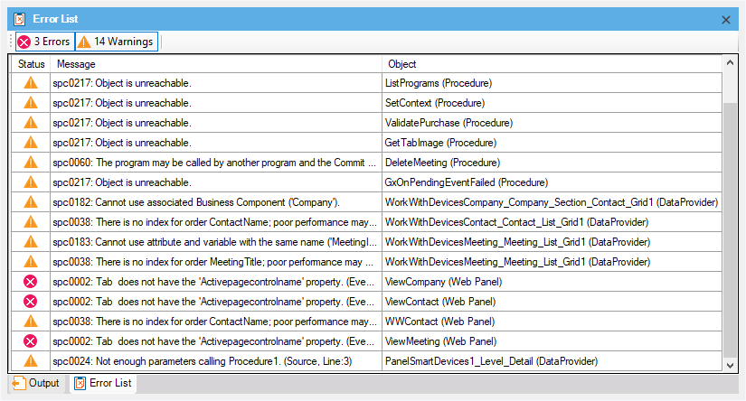

This tool window shows the specification errors and warnings that were detected during build operations and have not been resolved yet. This helps you to review each of the errors or warnings you may get when Building. Once resolved, they are removed from this list. You can open the tool window by selecting in the main GeneXus Menu: View / Other Tool Windows / Error List.  See Also
|